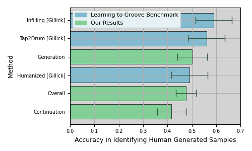
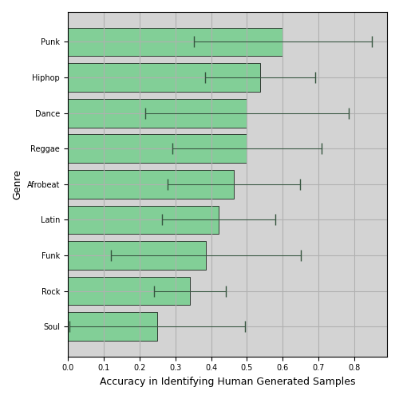
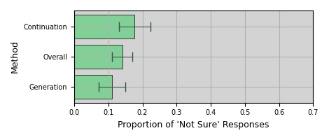

Transformer Neural Networks for Automated Rhythm Generation
Updated on: April 7, 2021
License: Creative Commons Attribution 4.0 International License (CC-BY 4.0)
Abstract
Recent applications of Transformer neural networks in the field of music have demonstrated their ability to effectively capture and emulate long-term dependencies characteristic of human notions of musicality and creative merit. We propose a novel approach to automated symbolic rhythm generation, where a Transformer-XL model trained on the Magenta Groove MIDI Dataset is used for the tasks of sequence generation and continuation. Hundreds of generations are evaluated using blind-listening tests to determine the extent to which the aspects of rhythm we understand to be valuable are learnt and reproduced. Our model is able to achieve a standard of rhythmic production comparable to human playing across arbitrarily long time periods and multiple playing styles.
Author Keywords
Transformer Neural Networks, Music Generation, Rhythm
CCS Concepts
•Applied computing → Sound and music computing; Performing arts; •Computing Methodologies → Machine Learning; •Computing Methodologies → Artificial Intelligence;
Introduction
The focus of this work is to examine how the application of current state-of-the-art machine learning methods in sequential data modelling can contribute to the creation of tools and processes for the automated generation, continuation and composition of musical rhythm.
Traditionally, the task of modelling musical sequences for the purposes of algorithmic composition has been difficult owing to its complex long-term structure and the computational requirements of capturing that. A recent addition to the family of models that handle sequential data is the Transformer neural network. The Transformer architecture uses attention mechanisms to process and learn long-term relationships in its input without the sequential recurrent processing of data that made previous methods so prohibitively resource-intensive [1] [2]. This ability to learn effectively in the long-term has seen Transformers achieve state-of-the-art success in various natural language tasks [3] [4] [5] and, more recently, music, where they have been successfully used for raw audio generation [6] and symbolic composition [7] [8]. Building on the availability of well-annotated symbolic drumming datasets such as the Magenta Groove MIDI dataset [9] and a growing body of literature examining the application of Transformers in music, this work hopes to contribute to the field of computational creativity with new approaches to rhythmic modelling and generation.
Our objective is to train a model with the ability to (1) generate new rhythms from scratch, and (2) continue an unseen user-defined input rhythm. Success is evaluated using a series of empirical and subjective tests to determine the extent to which we can effectively model consonant, interesting and musically valuable rhythm as we understand it.
Related Work
The task of algorithmic composition has existed for centuries, with increasing levels of success achieved in the last 50 years or so with the application of computational methods [10][11][12]. Early computational efforts examine the application of Recurrent Neural Networks (RNNs) to the task [11] [13] [14] [15], though their inability to learn effectively in the long-term limits their success in modelling more complex musical structures [16]. A variation on the traditional RNN, long-term short-memory networks (LSTMs), whose additional special units permit to maintain information in memory for longer time periods, address some of these issues. Many works using LSTM networks have produced impressive results [17] [18] [19] [20] [21]. Specifically in the rhythm domain, [22] [23] both produce interesting output on limited data. Most relevant to our task is Learning to Groove with Inverse Sequence Transformations by Gillick et al. [9]. In this work, a large symbolic dataset of professional drumming is introduced, the Groove MIDI dataset [9], to which an LSTM model of expressive performance is learnt and used for musical creativity tasks. However, LSTMs cannot yet be considered perfect in how they model temporal dependency in that there is still an emphasis on proximity in the input sequence. One drawback of the Learning to Groove approach for example is that the training and output is limited to short timescales (2 bars).
A more recent method of achieving long-term memory is the use of attention-based models, early descriptions of this approach can be found in [1] [24] [25]. Attention is at the heart of the Transformer neural network [2], whose application to symbolic music generation tasks has yielded impressive results, with [7] first demonstrating their effectiveness in generating music over long time-scales (60 seconds), and [8] doing so in a multi-instrument setting. Transformer-based architectures require musical events to be inputed/predicted as discreet categorical classes (i.e. musical events need to be tokenized). Hence, musical event representation is critical for generative tasks employing Transformers. One approach is to represent MIDI events sequentially in absolute timing [7]. Alternatively, musical events can be represented in relative timing/duration, as presented in [26] [27] [28].
While transformers show potential in generating long-term musical structures, they generally struggle to generate content that show expert-level rhythmic and harmonic consistency. [26] [27] [28] show that by incorporating more metrically and harmonically aware representations, these shortcomings can be improved, attesting to the fact that the performance of Transformer architectures is not only dependant on the architectural specifications, but rather also on the representation of the symbolic musical events.
Data and Representation
Here we introduce the dataset used in this work and describe the preprocessing transformations applied to it.
Dataset
The Magenta Groove MIDI Dataset (GMD) comprises 13.6 hours (22,000 measures) of human-performed, tempo-aligned, expressive drumming, played mostly by professional drummers. The data is provided in train, test and validation splits which we use here for training and evaluation correspondingly (see Table 1).
Table 1 - Train, Test and Validation Splits of GMD
Split | Beats | Fills | Measures | Hits | Duration (minutes) |
|---|---|---|---|---|---|
Train | 378 | 519 | 17752 | 357618 | 648.5 |
Validation | 48 | 76 | 2269 | 44044 | 82.2 |
Test | 77 | 52 | 2193 | 43832 | 84.3 |
Total | 503 | 647 | 22214 | 445494 | 815.0 |
All samples are matched with associated metadata including anonymised drummer identifiers, musical style annotations and tempo. Almost all samples are played in 4/4 timing, though there are some exceptions. Table 2 presents the distribution of playing style - or genre - across the dataset.
Table 2 - Genre Distribution of GMD
Genre | Count | Proportion |
|---|---|---|
rock | 341 | 0.297 |
funk | 160 | 0.139 |
jazz | 101 | 0.088 |
latin | 97 | 0.084 |
hip hop | 95 | 0.083 |
soul | 63 | 0.055 |
afrocuban | 60 | 0.052 |
punk | 58 | 0.050 |
new orleans | 53 | 0.046 |
country | 29 | 0.025 |
pop | 27 | 0.023 |
reggae | 20 | 0.017 |
gospel | 19 | 0.017 |
afrobeat | 13 | 0.011 |
dance | 7 | 0.006 |
blues | 4 | 0.003 |
highlife | 2 | 0.002 |
middle eastern | 1 | 0.001 |
Total | 1150 | 1.00 |
Sequence Tokenisation
We transform our raw data to a continuous one-dimensional stream of tokens, unique identifiers with a one-to-one mapping to pitch, velocity or time.
The original MIDI representation can be thought of as a sequence of triples, each element providing a value for pitch, velocity and start time, see equation 1 (since we are dealing with onset events only, duration is irrelevant and end time is not considered). It is important to note that all sequences are quantized to 1/16ths before training, as in [9].
=pitch of nthnote
=velocity of nthnote
=start time of nthnote
Three transformations are applied to the MIDI representation in equation 1: pitch mapping, velocity bucketing and time tokenisation, detailed in equations 2 - 7.
Pitch Mapping
The Roland TD-11 drumkit, which the dataset was collected on, records 22 distinct pitches, each corresponding to a different percussion instrument or sound. Many of these pitches are very sparse in the dataset and can be naturally grouped for lowering the dimensionality of the input data.
Table 3 - Pitch Mappings of Our Dataset
Pitch | Roland Mapping | General MIDI Mapping | Our Mapping |
|---|---|---|---|
36 | Kick | Bass Drum 1 | Bass (35) |
38 | Snare (Head) | Acoustic Snare | Snare (38) |
40 | Snare (Rim) | Electric Snare | Snare (38) |
37 | Snare X-Stick | Side Stick | Snare (38) |
48 | Tom 1 | Hi-Mid Tom | High Tom (50) |
50 | Tom 1 (Rim) | High Tom | High Tom (50) |
45 | Tom 2 | Low Tom | Low-Mid Tom (48) |
47 | Tom 2 (Rim) | Low-Mid Tom | Low-Mid Tom (48) |
43 | Tom 3 (Head) | High Floor Tom | High Floor Tom (45) |
58 | Tom 3 (Rim) | Vibraslap | High Floor Tom (45) |
46 | HH Open (Bow) | Open Hi-Hat | Open Hi-Hat (46) |
26 | HH Open (Edge) | N/A | Open Hi-Hat (46) |
42 | HH Closed (Bow) | Closed Hi-Hat | Closed Hi-Hat (42) |
22 | HH Closed (Edge) | N/A | Closed Hi-Hat (42) |
44 | HH Pedal | Pedal Hi-Hat | Closed Hi-Hat (42) |
49 | Crash 1 (Bow) | Crash Cymbal 1 | Crash Cymbal (49) |
55 | Crash 1 (Edge) | Splash Cymbal | Crash Cymbal (49) |
57 | Crash 2 (Bow) | Crash Cymbal 2 | Crash Cymbal (49) |
52 | Crash 2 (Edge) | Chinese Cymbal | Crash Cymbal (49) |
51 | Ride (Bow) | Ride Cymbal 1 | Ride Cymbal (51) |
59 | Ride (Edge) | Ride Cymbal 2 | Ride Cymbal (51) |
53 | Ride (Bell) | Ride Bell | Ride Cymbal (51) |
We adopt a grouping of pitches almost identical to that used by Gillick et al. in [9] (see Table 3). Applying this to the entire dataset reduces it to 9 unique pitches in total: kick drum, snare drum, closed hi-hat, open hi-hat, low tom, mid tom, high tom, crash cymbal and ride cymbal. After applying the mapping, each sequence is described by equation 2.
=mapped pitch of nthnote
Velocity Bucketing
Velocity values, , lie in the range . These are bucketed to fall within equally spaced bins.
=bucketed velocity of nthnote in [1..B]
for = 2:
for = 3:
is chosen by subjective evaluation of the model output at various values, reducing from , until we find a bucketing with which most buckets are occupied/being generated into a large proportion of the time. We find 4 to be a nice balance - in line with the number of choices one might be provided on a basic drum machine.
Finally, every (pitch , velocity bucket ) combination is assigned a unique token corresponding to that pair. With and 9 pitch classes, we thus have 36 () unique tokens, corresponding to every possible combination of (, ). We experimented with representing the velocity and pitch as separate tokens but found the results (subjective listening and quantitative evaluation of our model) to be better with the combined representation.
Equation 6 concludes the velocity representation of our sequences.
=unique (pitch, velocity) token for nthnote
Time Tokenisation
The time ordering of equation 6 can be deduced from its time dimension ( values). We want to reduce the number of dimensions at each element from two to one. To do this, time tokens are inserted into the sequence to separate the pitch-velocity () tokens by tokens representing the time between them.
The transformation of the sequence in equation 6 is as follows:
−ta>= time tokens representing difference in time between notes b and a
To create the time tokens to fill the sequence in equation 7, the difference in time (in seconds) is computed between neighbouring pitches and converted to ticks. Ticks are a unit of time in MIDI representation that reflect the maximum resolution at which the MIDI recording software can detect notes. In our dataset the number of ticks per quarter is 480. If the difference in time between two MIDI events is smaller than the length of a tick, they are recorded as occurring simultaneously. Representing silence using ticks is inspired by the successful application in a musical context using the Transformer-XL framework by Donahue et al. in [8].
The number of unique ticks between two events is kept to a minimum, representing all silences in the dataset with 5 unique tick time tokens, as shown in Table 4.
Table 4 - Time Tick Tokens
Time Token | Number of Ticks |
|---|---|
1 | 1 |
2 | 10 |
3 | 100 |
4 | 1000 |
5 | 10000 |
Silences are filled with as few individual tick tokens as possible for the duration. For example a silence of 345 ticks is represented by (3 one hundred tokens, 4 ten tokens and 5 one tokens). Similarly, a silence of 5003 ticks would be represented by . These time token sequences fill the −ta> gaps in equation 7. Pitches that are hit in unison are represented by neighbouring tokens without any time tokens in between.
All of our sequences are converted to this one-dimensional format and joined together into one long stream. Each sequence is divided in the stream by a special dividing token. This joining is relatively infrequent and does not skew the models learning of tokens we care about. This approach is also used to separate documents in the paper presented with the Transformer-XL model [29] and to separate musical sequences in [8].
Methodology
Transformer-XL Model
A Transformer-XL model is trained on our data stream. This model augments the original Transformer with a recurrence mechanism that enables it to use information beyond its training segment, removing the memory bottleneck in learning long-term dependencies; [8] demonstrates this in a musical context.
For a corpus of tokens ,...,xT), at a given step in the sequence, the Transformer-XL model learns the joint probability , auto-regressively expressed in equation 8.
As with the original Transformer model [2], the conditional probability is learnt by training an encoder on a context, , to a fixed hidden state which is subsequently multiplied by the existing token embeddings, returning logits. A softmax is applied to the logits to give a categorical probability distribution for the next token [29].
The XL model is specifically interested in encoding arbitrarily long contexts (input sequences of arbitrary lengths). Encoding had previously been achieved by breaking the input sequence into training segments and training the model individually on each. In which case, the largest possible dependency length is dictated by the segment size and inevitably (more often than not) contexts are split up (in the event of a segment boundary falling in the middle of one of our concatenated input sequences). To address this limitation, the XL model implements a segment-level recurrence mechanism, where the hidden state learnt for each segment is cached and made available to the next segment. Applying this mechanism to every two segments creates a recurrence that effectively spans the length of all segments. This is noted as contributing to a huge increase in dependency length over the original Transformer or previous RNN models (450% and 80% respectively) [29].
Sampling and Generation
Our trained model is used for two generative tasks; (1) the generation of new sequences, and (2) the continuation of existing ones. Our approach is adapted from [8].
Task 1: Rhythm Generation
The generation task is to create new sequences completely from scratch. The model is primed with the special token used to delimit sub-sequences in our long one-dimensional training sequence (from Data Representation). As mentioned in the previous section, the current token (in this case the special delimiter) is encoded and multiplied by the existing token embeddings, to produce a distribution over the next token. We sample from this distribution to select our next token, feed this back into the model to update the memory/add to context and repeat until a given generation length. This sampling is controlled with the sampling temperature and top K parameters [30].
The output of the generation is a sequence identical (in format) to that introduced in equation 7. The sequence is then de-tokenised to MIDI, with the velocity of each element randomly generated from within the bucket corresponding to its value.
Task 2: Rhythm Continuation
Generation by continuation functions exactly the same as the generation introduced in the previous sub-section, except that before generating, the model is primed with an existing input sequence (i.e. an existing input sequence is passed to the model), updating the internal memory before any sampling is done.
Sampling temperature and top K are also parameters of Continuation. Another parameter specific to continuation is the prime length. This specifies how many tokens from the priming sequence are passed to the model before asking it to generate. A higher value for prime length results in a much more stable output, truer to the original form; however, this comes at the cost of improvisation or exciting/interesting results.
Evaluation
The hyperparameters used for training our final model were selected by subjectively evaluating the MIDI output of the model, for multiple parameter combinations in a sensible search space. The number of training epochs were selected by stopping at the point beyond which no further decrease in perplexity on the valid set is observed. However, perplexity does not always correlate with human perceptions of musicality. Therefore, we provide here the results of structured, blind listening tests, plus some subjective evaluation of the output by the authors. Naturally, the output of this process is best evaluated aurally; for this reason, we encourage the reader to spend some time listening to the samples provided1.
Listening Tests
Listening Material
500 individual rhythms of varying length and genre are generated for evaluation in a blind-listening test. All generations are created via the generation (top K=25, temperature=0.95) or continuation (top K=25, temperature=0.92) methods. Sequences of 3000 tokens are generated and the first 8 bars extracted manually. This manipulation, along with the alignment of the first beat to coincide with time=0, is the only human interference with the samples. Given the imbalance in genre in the dataset, and the finite sampling for our test, some of the less common genres are not present. Table 5 displays the genres included in the test and their relative proportions. Of course, this is only relevant to those samples created by the generation method.
Table 5 - Genre Distribution of Samples in Listening Test
Genre | Rock | Reggae | Latin | Afrobeat | Soul | Punk | Dance | HipHop | Funk |
|---|---|---|---|---|---|---|---|---|---|
Prop | 0.32 | 0.08 | 0.14 | 0.11 | 0.05 | 0.06 | 0.05 | 0.15 | 0.05 |
Experiment Setup
The experiment is carried out on the Amazon Mechanical Turk platform, on which 136 unique listeners - selected at random with no prerequisite demographic or qualities - are asked to listen to two 8-bar samples, one from the generated dataset of 500 and one from the original Groove MIDI dataset. Listeners are aware that one of the two samples is generated by a machine, and one by a human. They are asked to select which one they believe is generated by a human, they also have the option of answering with "not sure". Inspired by [8], and to ensure that we only count responses where the worker genuinely listened to both samples, we include 4 instances in which randomly generated noise samples replace our machine-generated ones. Responses from listeners who fail to identify the correct sample in any one of these 4 instances are removed from the test. In total, 640 individual comparisons (human or machine) are carried out. After removing the responses of listeners who failed the random noise test, 548 remain for analysis.
Results
Figures 1 and 2 show the accuracy of the participants’ ability to identify which of the pairs of samples they are presented is human-generated. An accuracy of 60% indicates that 60% of the time, our model is not able to convince a human listener that it itself is human; hence a lower value in these charts reflects a more performant model. These two charts are split across the metadata we have for the samples, genre, and generation type. It is important to note that there is no ground truth genre annotation for the samples generated by the generation method (i.e. completely sampled from the model) and as such, our sample size for experiments tagged with this information is roughly halved - hence the larger error.


Figure 1 - Overall Accuracy


Figure 2 - Genre Accuracy
We have included in Figure 1 the results of a similar experiment presented in Learning to Groove from Gillick et al. [9]. In their experiment, the generations are put to listeners in a blind test, in an effort to determine their model’s ability to pass as human. Though none of the three methods presented by Gillick match exactly our work, we believe that the tasks are sufficiently similar to merit comparison.
In total, 77 out of 548 tests (14.1%) result in the listener not being able to identify which of the two samples is human (answering with "not sure"), these responses are therefore not counted in the numerator of the accuracy calculations presented in Figures 1 and 2. Figure 3 shows this proportion over all tests and for each of our generation methods separately.


Figure 3 - Sureness
Subjective Evaluation by the Authors
Generations
Our generations from scratch can be roughly categorised into three groups: good, bad, and ugly. These classes are loosely defined and, as such, it is difficult to say exactly what proportion of our generated samples fall into each category, and indeed varies over the length of the output. A majority of our outputs do however exhibit some identifiable musicality, and most eventually converge to a recognisable style and consistency. We encourage the reader to exam the sounds linked to in the footnotes.
The Good
Defined as such because, by our own judgement, they are musically decent, consistent (they keep and remain in time), occasionally exciting, maintain long-term structure (over 8 or 16-bar loops) and could reasonably pass as human generated. However, there isn't much variation in style across the samples. Largely, they tend to be variations around rock, soul or dance beats, with more complex rhythmic patterns, such as those found in latin or afro-cuban, not appearing to any measurable degree. This last point is unsurprising given the distribution across genres in our dataset (see Table 2).
Three examples are provided2
The Bad
These generations are clearly not created by skilled drummers. They exhibit at least (and in many cases, more than) one of the following characteristics: poor timing, monotonous velocity, incorrectly placed accents, machine-like repetition, or little (if any) appreciable musicality.
Three examples are provided3
The Ugly
These samples are interesting and make up a non-negligible part of our generations. They are deemed to exhibit some degree of musicality, but a trained ear could identify that they were not played by skilled drummers. For example, they keep bad time, or the periodicity of the sub-rhythms does not match up with what is customary/expected/consonant. It is possible that these samples could fool a listener with no interest/experience in music into believing it was made by a human, or feasibly that it was played by an inexperienced drummer - an important point to bear in mind, given that the listeners in our listening tests did not necessarily have any experience in music.
Three examples are provided4
Continuations
The continuations are generally good; they play in (and keep) good time; accents are in the right places; they exhibit interesting and varied syncopations; and, in most examples/genres, there is an identifiable, long-term structure with both repetition and one-off surprises (over time intervals of 8 bars+). There are very few examples of continuation where the model loses some aspect of rhythmic musicality that would give it away as being machine made (for example losing time, missing a beat, unusual velocity progressions). The reason for this is evidently the models ability to mimic the input pattern in the long-term. The continuations, though musically impressive, do not differ much (if at all) from the samples which they succeed.
Three examples of continuation are provided in the genres, afrobeat, dance, and latin.5
Discussion
The representation of the Groove MIDI dataset is integral to the work of this paper. Combining velocity and pitch is an unintuitive choice that produces subjectively better results. This may be due to the increase in size of the model vocabulary in multiplying the number of tokens for each pitch by the number of velocity buckets, thus reducing the chances of incorrectly sampling. The time representation is also unique and unseen in other works. Using ticks rather than quantized time steps does not inhibit the models ability to keep time, paving the way for less-quantized approaches in future. On the point of quantization, it is obvious by listening, that the 1/16th note quantization in some training examples does remove some of the rhythmic essence. This is most obvious in drum rolls, and a similar observation is made in [9].
The generations are varied in quality and limited in genre. It has also not been proven that the model adds any significant layer of improvisation to the existing samples in the raw dataset. We argue that this is not a negative point, and that reproducing input demonstrates an ability to learn in the long-term, something identified as difficult or expensive in previous algorithms. The genre distribution of our output samples reflects the distribution in our raw dataset. This is expected albeit slightly disappointing (as some of the more rhythmically interesting genres are less common). A fine-tuning technique, such as that proposed in [8], could aid in controlling these distributions.
The selection of model and generation parameters have a huge impact on the quality and character of results. A lower memory length for the generations from scratch helps to avoid the model getting stuck in musically undesirable loops. This is presumably because the model doesn't feed back into itself as much as with a longer memory length and hence doesn't internalize its bad learnings to the same extent. Top K is tuned relative to the number of tokens and dictates the extent of improvisation, or deviations from identifiable reproductions of the input data. Sampling temperature also balances this trade-off and is useful in defining the models ability to find its way out of undesirable loops. As noted in [8], lowering the sampling temperature prevents the generations from getting stuck in loops, both desirable and undesirable. A high enough prime length in continuation ensures a reliable reproduction of the input, but this comes at the cost of less experimentation. The work presented here is a prototype of methodology rather than a finished usable musical interface; however, one could feasibly see the value in top K and sampling temperature functioning as controllable parameters of an instrument built using these processes.
Given the statistical uncertainty of the listening test results presented in Figures 1-3, it is impossible to conclude that the model performs better on a specific genre or task. However, we can conclude that our model is consistently able to convince listeners that it is human and that this has not necessarily been completed on all generation tasks on this dataset to date. Listening to the generated samples corroborates these results, in both the short and long term; an achievement that we present for the first time in this domain.
It would be remiss not to acknowledge that these types of tests have been criticised for their ability to effectively evaluate generative systems [31]. We present these tests and results, not as the ultimate appraisal of our models creative output, but instead as the bare minimum required to validate our proposed approach - that its output, in a significant proportion of cases, cannot be distinguished from a human attempting the same task. Future experiments would be sensible to consider feature-based evaluation, such as in [32], where musically-meaningful and problem-relevant aspects of the output are aggregated and compared analytically.
Finally, we reflect on the extent to which the work presented here contributes to the field of new musical interface design. Although not sufficiently developed to be considered a workable musical interface in itself, it should serve as proof that this methodology has the potential to contribute to tools that aid in the creative musical process. One could imagine, for example, the use of a pre-trained model such as our own in an interface that provides the user with bespoke and musically interesting generations across various styles and/or context-relevant continuations of user created input, whether through live midi recording or the use of music production software.
Conclusions and Future Work
We hope to have demonstrated the value in applying Transformer neural networks to the task of automated rhythm generation for the purposes of appreciable musical output. We present generations of musical quality comparable to human drummers, both in musical character and in how they are perceived over long timescales. And in doing so, hope to have offered an exciting basis for the future development of percussion specific automated generative tools.
Footnotes
Random generations - https://soundcloud.com/user-124263192/sets/random-generations
↩Good generations - https://soundcloud.com/user-124263192/sets/good-generation-examples
↩Bad generations - https://soundcloud.com/user-124263192/sets/bad-generation-examples
↩Ugly generations - https://soundcloud.com/user-124263192/sets/ugly-generation-examples
↩Continuations - https://soundcloud.com/user-124263192/sets/continuations
↩
Citations
- ↩Bahdanau, D., Cho, K., & Bengio, Y. (2014). Neural Machine Translation by Jointly Learning to Align and Translate. CoRR, abs/1409.0473.
- ↩Vaswani, A., Shazeer, N., Parmar, N., Uszkoreit, J., Jones, L., Gomez, A. N., … Polosukhin, I. (2017). Attention Is All You Need. CoRR, abs/1706.03762. Retrieved from http://arxiv.org/abs/1706.03762
- ↩Devlin, J., Ming-Wei Chang, Lee, K., & Toutanova, K. (2018). BERT: Pre-training of Deep Bidirectional Transformers for Language Understanding. CoRR, abs/1810.04805. Retrieved from http://arxiv.org/abs/1810.04805
- ↩Brown, T. B., Mann, B., Ryder, N., Subbiah, M., Kaplan, J., Dhariwal, P., … Amodei, D. (2020). Language Models are Few-Shot Learners.
- ↩Raffel, C., Shazeer, N., Roberts, A., Lee, K., Narang, S., Matena, M., … Liu, P. J. (2019). Exploring the Limits of Transfer Learning with a Unified Text-to-Text Transformer. CoRR, abs/1910.10683. Retrieved from http://arxiv.org/abs/1910.10683
- ↩Dhariwal, P., Jun, H., Payne, C., Kim, J. W., Radford, A., & Sutskever, I. (2020). Jukebox: A Generative Model for Music.
- ↩Cheng-Zhi Anna Huang, Vaswani, A., Uszkoreit, J., Shazeer, N., Hawthorne, C., Dai, A. M., … Eck, D. (2018). An Improved Relative Self-Attention Mechanism for Transformer with Application to Music Generation. CoRR, abs/1809.04281. Retrieved from http://arxiv.org/abs/1809.04281
- ↩Donahue, C., Mao, H. H., Li, Y. E., Cottrell, G. W., & McAuley, J. (2019). LakhNES: Improving multi-instrumental music generation with cross-domain pre-training.
- ↩Gillick, J., Roberts, A., Engel, J., Eck, D., & Bamman, D. (2019). Learning to Groove with Inverse Sequence Transformations. In International Conference on Machine Learning (ICML).
- ↩Maurer, J. A. (n.d.). A Brief History of Algorithmic Composition.
- ↩Alpern, A. (1995). Techniques for Algorithmic Composition of Music.
- ↩Ji, S., Luo, J., & Yang, X. (2020). A Comprehensive Survey on Deep Music Generation: Multi-level Representations, Algorithms, Evaluations, and Future Directions.
- ↩Jean-Pierre Briot, Hadjeres, G., & Pachet, F. (2017). Deep Learning Techniques for Music Generation - A Survey. CoRR, abs/1709.01620. Retrieved from http://arxiv.org/abs/1709.01620
- ↩Todd, P. M., & Loy, G. (1989). A Connectionist Approach To Algorithmic Composition. In Computer Music Journal (Vol. 13, pp. 27–43).
- ↩Boulanger-Lewandowski, N., Bengio, Y., & Vincent, P. (2012). Modeling Temporal Dependencies in High-Dimensional Sequences: Application to Polyphonic Music Generation and Transcription. Proceedings of the 29th International Conference on Machine Learning, ICML 2012, 2.
- ↩Chung, J., Gülçehre, C., Cho, K., & Bengio, Y. (2014). Empirical Evaluation of Gated Recurrent Neural Networks on Sequence Modeling. CoRR, abs/1412.3555. Retrieved from http://arxiv.org/abs/1412.3555
- ↩Eck, D., & Schmidhuber, J. (2002). Finding temporal structure in music: Blues improvisation with LSTM recurrent networks (Vol. 12, pp. 747–756). https://doi.org/10.1109/NNSP.2002.1030094
- ↩Choi, K., Fazekas, G., & Sandler, M. B. (2016). Text-based LSTM networks for Automatic Music Composition. CoRR, abs/1604.05358. Retrieved from http://arxiv.org/abs/1604.05358
- ↩Johnson, D. (2017). Generating Polyphonic Music Using Tied Parallel Networks. In International Conference on Evolutionary and Biologically Inspired Music and Art (pp. 128–143). https://doi.org/10.1007/978-3-319-55750-2_9
- ↩Mao, H. H., Shin, T., & Cottrell, G. W. (2018). DeepJ: Style-Specific Music Generation. CoRR, abs/1801.00887. Retrieved from http://arxiv.org/abs/1801.00887
- ↩Simon, I. (n.d.). Performance RNN: Generating Music with Expressive Timing and Dynamics.
- ↩Makris, D., Kaliakatsos-Papakostas, M. A., Karydis, I., & Kermanidis, K. (2017). Combining LSTM and Feed Forward Neural Networks for Conditional Rhythm Composition. In EANN.
- ↩Hutchings, P. (2017). Talking Drums: Generating drum grooves with neural networks. CoRR, abs/1706.09558. Retrieved from http://arxiv.org/abs/1706.09558
- ↩Raffel, C., & Ellis, D. P. W. (2015). Feed-Forward Networks with Attention Can Solve Some Long-Term Memory Problems. CoRR, abs/1512.08756. Retrieved from http://arxiv.org/abs/1512.08756
- ↩Bahdanau, D., Chorowski, J., Serdyuk, D., Brakel, P., & Bengio, Y. (2015). End-to-End Attention-based Large Vocabulary Speech Recognition. CoRR, abs/1508.04395. Retrieved from http://arxiv.org/abs/1508.04395
- ↩Huang, Y.-S., & Yang, Y.-H. (2020). Pop Music Transformer: Beat-based Modeling and Generation of Expressive Pop Piano Compositions.
- ↩Wu, S.-L., & Yang, Y.-H. (2020). The Jazz Transformer on the Front Line: Exploring the Shortcomings of AI-composed Music through Quantitative Measures.
- ↩Wu, X., Wang, C., & Lei, Q. (2020). Transformer-XL Based Music Generation with Multiple Sequences of Time-valued Notes.
- ↩Dai, Z., Yang, Z., Yang, Y., Carbonell, J. G., Le, Q. V., & Salakhutdinov, R. (2019). Transformer-XL: Attentive Language Models Beyond a Fixed-Length Context. CoRR, abs/1901.02860. Retrieved from http://arxiv.org/abs/1901.02860
- ↩Fan, A., Lewis, M., & Dauphin, Y. (2018). Hierarchical Neural Story Generation. In Proceedings of the 56th Annual Meeting of the Association for Computational Linguistics (Volume 1: Long Papers) (pp. 889–898). Melbourne, Australia: Association for Computational Linguistics. https://doi.org/10.18653/v1/P18-1082
- ↩Ariza, C. (2009). The Interrogator as Critic: The Turing Test and the Evaluation of Generative Music Systems. Comput. Music. J., 33(2), 48–70. https://doi.org/10.1162/comj.2009.33.2.48
- ↩Yang, L.-C., & Lerch, A. (2020). On the evaluation of generative models in music. Neural Computing and Applications, 32. https://doi.org/10.1007/s00521-018-3849-7